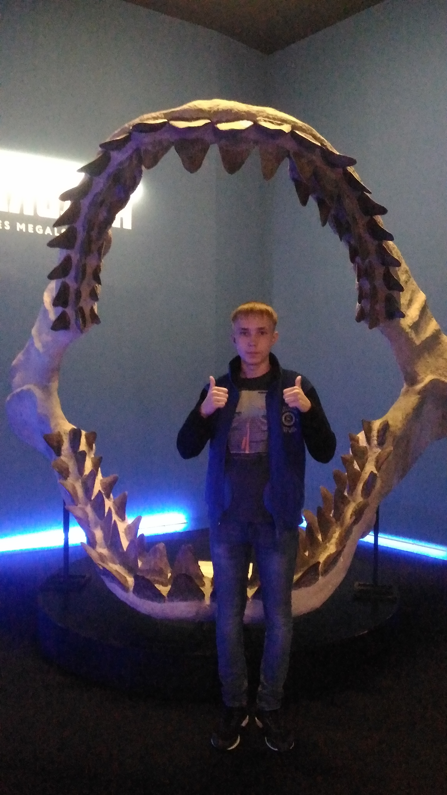

Так вот я выглядел в 2018
Родился я в Йошкар-Оле в 2003 году. Все 11 лет обучения проходил в СОШ №9, там и готовился к ЕГЭ.
На ФИиВТ поступил с информатикой, хоть и сдал её так себе. Выбрал именно ФИиВТ из-за того, что всегда хотел стать программистом.
Мои основное времяпрепровождение- это сидеть за компьютером и гулять с друзьями или просто проводить с ними время в интернете.
Чем я могу заняться в свободное время: